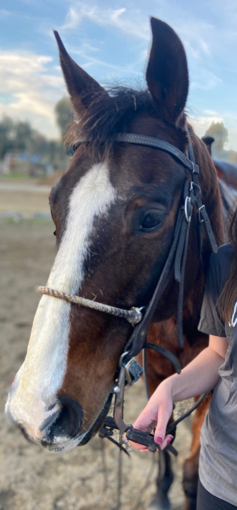

Smart Goals
My Extra Activities
One of my favorite activites outside of school is horseback riding. I have done it for a while now and it is my favorite thing to do after school. This extra curricular has made me a more mindful person when handling animals and understanding them. This activity has also given me a break from school and is a way for me to spend time with the animals that mean a lot to me.
I also sponsored a colt for 5 years and trained it. His name is Dark Star and he is now 5 years old, we also paid for the feed that the horses were given, and vet bills that the stable needed to pay for which gave me awarness of how priveleged I truly am to have access to horse back riding and how I can use that to benefit others.
Some of the charities that I have helped is
Ferdinads Familia
Feeding San Diego
Help Kira Fight Foundation
The Humane Society

This is me and my horse

This is Teddy!